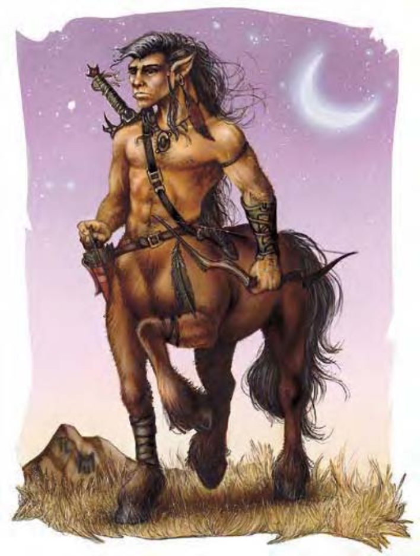

| 资料栏位 | 人马 (Centaur) 大型人形怪物 |
|---|---|
| 生命骰 | 4d8+8 (26hp) |
| 先攻 | +2 |
| 速度 | 50英尺 (10格) |
| 防御等级 | 14 (-1体型、+2敏捷、+3天生)、接触11、措手不及12 |
| 基本攻击/擒抱 | +4 / +12 |
| 攻击 | 长剑+7近战 (2d6+6/19-20), 或复合长弓 (+4力量加值) +5远程 (2d6+4/*3) |
| 全力攻击 | 长剑+7近战 (2d6+6/19-20) 和 2蹄子+3近战 (1d6+2); 或者复合长弓 (+4力量加值) +5远程 (2d6+4/*3) |
| 占据/触及 | 10英尺 / 5英尺 |
| 特殊攻击 | ― |
| 特殊能力 | 黑暗视觉 60 英尺 |
| 豁免 | 强韧+3, 反射+6, 意志+5 |
| 属性 | 力量18, 敏捷14, 体质15, 智力8, 感知13, 魅力11 |
| 技能 | 聆听+3, 潜行+4, 侦察+3, 生存+2 |
| 专长 | 闪避, 武器专攻 (蹄踢) |
| 环境 | 温带森林 |
| 组织 | 单独, 成队 (5-8), 成群 (8-18 外加 1 名等级 2-5 的指挥官), 或部落 (20-150 外加 30% 的非战斗人员, 此外还有 10 名等级 3 的士官, 5 名等级 5 的尉官, 以及 1 名等级 5-9 的指挥官) |
| 挑战等级 | 3 |
| 宝物 | 标准 |
| 阵营 | 通常中立善良 |
| 进化 | 视人物等级而定 |
| 等级调整 | +2 |
该生物从树林中飞奔而出，雷鸣般的蹄声响彻四周。其上半身类似人类的躯干、手臂、头部，下半身则为大型马。该生物手持长弓，箭已上弦，随时准备应付危机。
人马居住于森林，不喜欢大群的陌生人。人马是致命的弓箭手，近战能力也令人畏惧。人马像重型马一样大，但是要比重型马高很多而且还要稍微重一些。人马约有 7 英尺高 2100 磅重。人马会说木族语和精灵语。
战斗人马个性温和，但身上一定带有武装。他们最喜爱的近战武器是长剑。斥候或打猎时则携带复合长弓。持用长弓的人马可以在冲锋时视同骑乘坐骑进行攻击并造成两倍伤害。人马通常不会主动挑起冲突。受到威胁时，其反应通常是快速撤退，偶尔放几支箭阻止敌人追击。遇到危害部落的强大生物时，人马也倾向采取相同策略，但将近一半执行“撤退”的人马将会迂回伏击或从后方攻击敌人。
人马的社会结构与同种族相处时，人马擅于交际。但在酒精的作用下，他们将会变得吵闹、粗鲁，且富有侵略性。单独出行的人马通常从事狩猎或侦察活动。一伙或部队人马通常集体从事狩猎或侦察活动。人马部落大部分成员都会留在居住地附近。留在居住地内的人马大多为女性；男性成员负责从事狩猎或侦察活动时，女性成员则负责领导与管理部落。部落内三分之一的人口为未成年半人马。
典型的人马居住地通常位于森林深处，为一大片隐匿空地或草地，并有充足的流动水源。随着气候不同，其住家可能是茅屋或单斜面房屋，一个家庭住一栋。烹煮取暖用的锅炉则置于公共区域，远离树林。人马擅长园艺，会在居住地附近种植有用的植物。在危机四伏、怪物横行的区域，人马会在居住地四周种一圈厚厚的灌木丛围篱，并设下陷坑与圈套。
人马以狩猎、采集、捕鱼、农耕以及贸易的方式为生。他们不喜欢与人类交易，但会与精灵交易，食物与红酒占据其中的大宗。人马将由怪物身上获得的财宝分给猎户。
人马的部族领地大小随其人口数与居住地区特殊能力而异。他们并不排斥与精灵共享领地。人马对待闯入领地陌生人的态度乃视其种族而定。他们会礼貌地要求人类与矮人离开，默许半身人和侏儒四处游荡，并欢迎精灵。人马对待怪物的态度则视其对部族利益与生存的威胁程度而定。若巨龙或龙闯入领地，人马就搬家；若巨魔、兽人等同入，则人马会尝试消灭他们。
大多数人马信奉斯凯里特 Skerrit，自然与共生之神。斯凯瑞特的偏好武器是短矛。
作为角色存在的人马人马偶尔会成为吟游诗人、巡林客或德鲁伊。人马巡林客通常选择魔法兽或特定类人生物作为其宿敌。人马德鲁伊通常是部族的领导人与发言人。人马牧师（他们通常相对罕见）信仰斯凯里特，并可从以下领域中任选两个：动物，善良，或植物。
人马角色获得以下种族特殊能力：